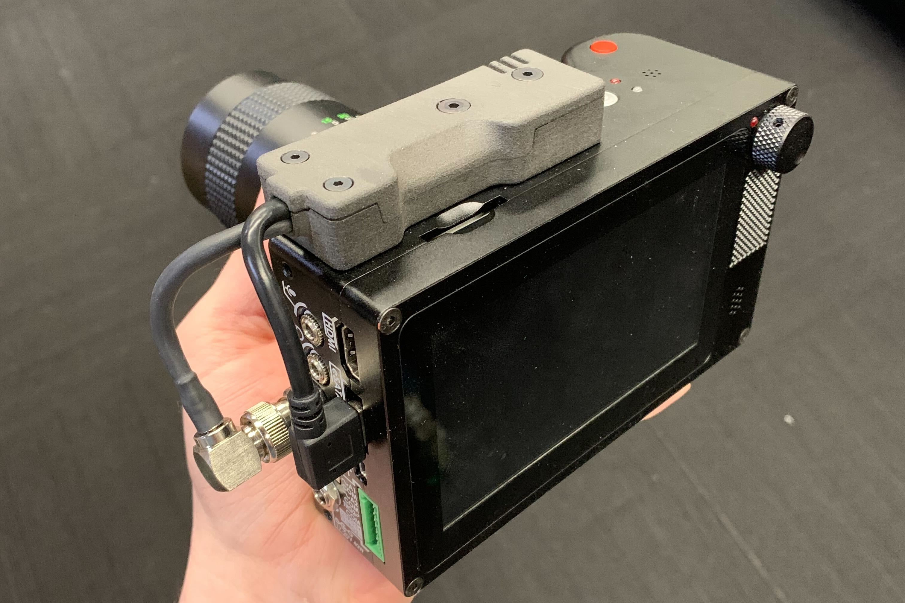
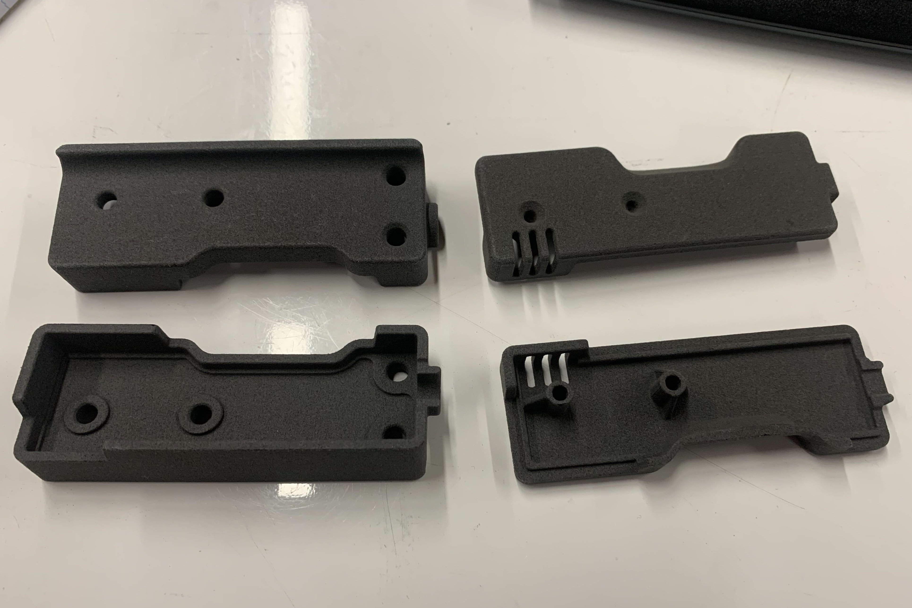
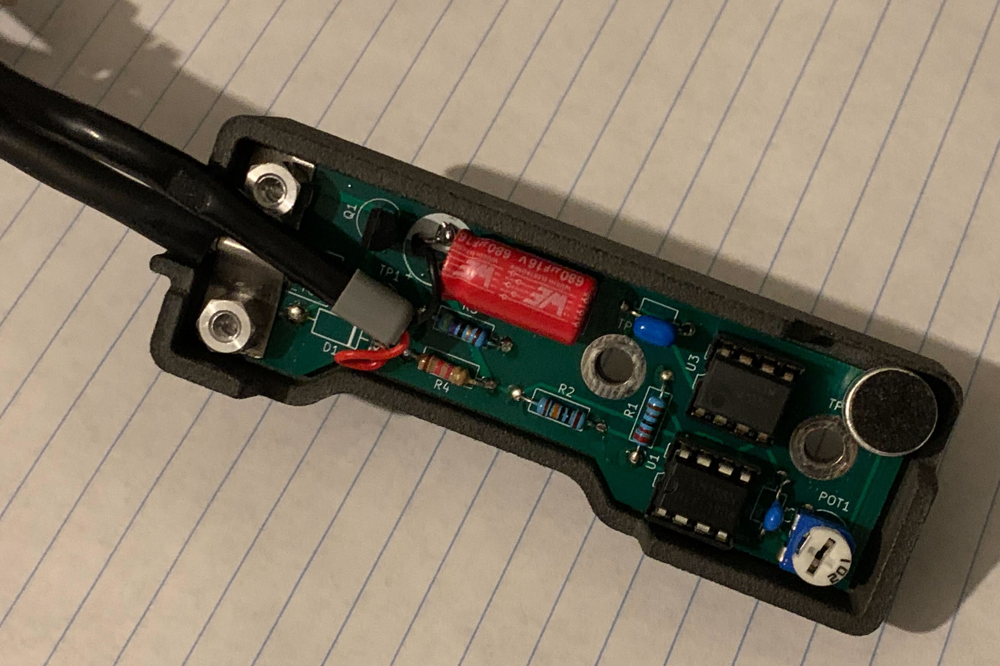

High-Speed Camera Sound Trigger
Automatically triggering my high speed camera using a loud noise

As you can see from my other projects, I've done a bit of DIY gunsmithing for some time. Troubleshooting firearms is a difficult task, because their operation happens on such short time-scales that it's nearly impossible to perceive what's happening. Eventually I bought a high-speed camera to make this easier (a Chronos 1.4, which I highly reccomend). The way high speed cameras work is that you start recording, and the camera saves continuously to a buffer. It constantly overwrites the oldest data in this buffer. When the camera is triggered, it will stop recording after some (possibly zero) delay. The buffer allows it to record things that happened before the trigger.

Two housing pairs for the sound trigger, SLS-printed in Nylon.
When using the camera for firearms, it's a hassle to trigger the camera after firing. Frequently the gun will malfunction (I'm using the camera for a reason, after all), and I have to make sure the gun is in a safe state before I can jump up and trigger the camera manually. A simple remote trigger switch would work, of course, but I realized there was an even easier solution. Firing the gun gives a pretty obvious sound signature, so I could just make a circuit that triggers the camera based on the sound.
The very first version was big, clunky, and fairly ham-fisted, using an arduino to call the shots. It was a large box with a battery pack that hung off the side of the camera by the BNC connector. It worked great, but I obviously wanted a more productized solution. The camera trigger is a 5V pull-down, that draws 20mA when shorted. With the treshold somewhere in the middle, this means a 10mA draw is needed to trigger it. To be safe, I figured if I could draw less than 5mA, it should never trigger. I ditched the power-hungry arduino and designed a circuit with just an op-amp and a 555 timer that would perform the same function with almost negligible power draw. The circuit would charge up a capacitor using the pull-down line, drawing less current than needed to trigger the camera. The capacitor provided enough carge to keep the device running for the fraction of a second that it needed to operate unpowered, while it shorted the pull-down line to ground to trigger the camera. The goal of this design was to have just one connection to the camera, and no batteries in the device: just connect it, and it works.

The inside of the device. If you look carefully, you can see the unpopulated spot for the diode that allowed the device to draw from the camera pull-down line.
In actual testing, however, it didn't work. I couldn't quite work out why, and in the end I had to pivot. The camera also had a typical USB-A port that provided 5V, so I ran a second cable for power, and bypassed the portion of the circuit that drew power from the pull-down line. I think the cause of the issue was that the ICs I was using were at the very bottom of their allowable supply voltage range, and so wouldn't function reliably. Low-voltage versions of those same ICs do exist, so if I simply got some of those, I might be in business.